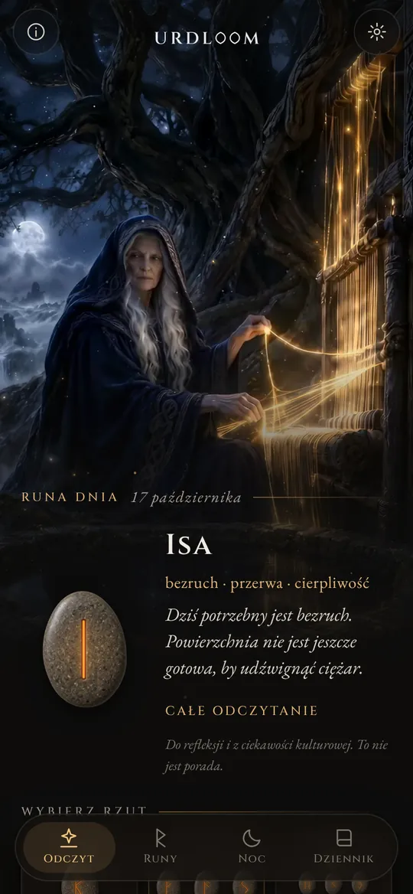
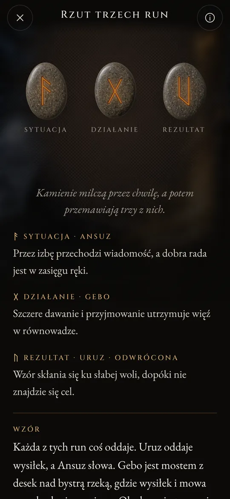
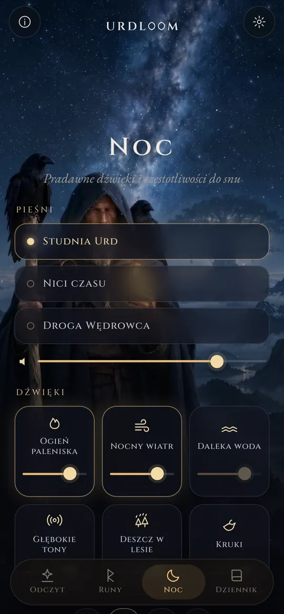
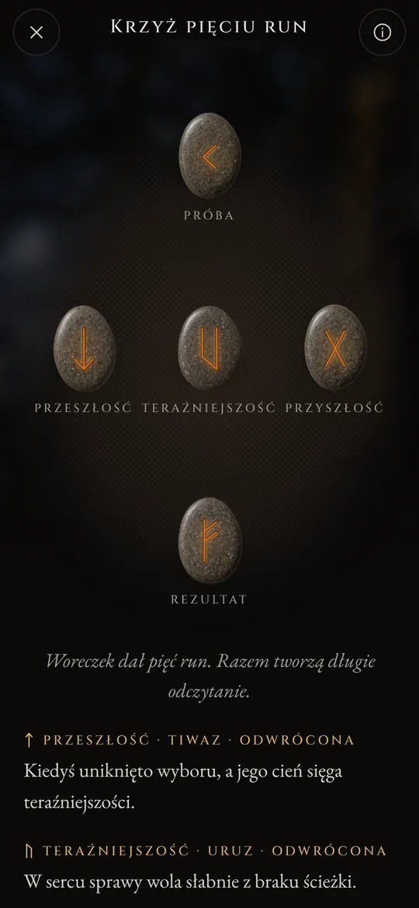

Odczytania run ze studni losu.
Rzucaj runy Elder Futhark, czytaj to, co wypadło, głosem dawnych pieśni i pozwól, by dźwięki nocy ukołysały cię do snu.
Trzy kobiety siedzą przy studni
W dawnych pieśniach nordyckich trzy Norny siedzą przy studni pod Yggdrasilem, drzewem świata. Podlewają jego korzenie, rzeźbią znaki w drewnie i wyznaczają losy wszystkich, którzy się rodzą. Najstarsza z nich to Urd. Jej imię znaczy „to, co się stało”, a studnia nosi jej imię.
Urdloom wziął nazwę od niej i od krosna (po angielsku loom), na którym, jak mówiono, tka się los. Aplikacja zachowuje ten nastrój: sakiewka z kamieniami w dłoni, płótno na podłodze i odczytania pisane głosem sag, a nie głosem horoskopu.

Stamtąd przychodzą dziewy, wiele wiedzące, trzy z jeziora pod drzewem.Völuspá, strofa 20
Przytrzymaj, potrząśnij, puść
Przytrzymaj sakiewkę, a kamienie zagrzechoczą ci w dłoni. Puść, a polecą na płótno, potoczą się, ułożą i odwrócą jeden po drugim. Pod nimi pojawi się odczytanie.

Pojedyncza runa
Jeden kamień na nadchodzący dzień albo na pytanie, na które można odpowiedzieć tak lub nie. Dotknij, a zostanie rzucony.


Rzut trzech run
Sytuacja, działanie, rezultat. Czytaj od lewej do prawej jak krótką sagę, a potem jako całość: nić na końcu pokazuje, jak te trzy rozmawiają ze sobą.

Krzyż pięciu run
Przeszłość, teraźniejszość i przyszłość w poprzek, próba u góry i rezultat u dołu, a ty stoisz w samym sercu krzyża.




Każde odczytanie zostało napisane ręcznie: dwadzieścia cztery runy, każda para i wszystkie 2024 połączenia trzech run, w każdym z dwudziestu dwóch języków. Nic nie powstaje automatycznie, gdy czekasz.

Dwadzieścia cztery runy
Elder Futhark to najstarszy alfabet runiczny, ryty mniej więcej od II do VIII wieku. Jego dwadzieścia cztery znaki dzielą się na trzy rodziny po osiem, zwane ættami, a każda nosi imię boga, którego runa stoi na jej czele. Dotknij kamienia, by go odczytać.
Ætt Frejra
Ætt Hagala
Ætt Tyra
Nazwy run we wszystkich językach zachowują dawną formę. To imiona samych znaków, odtworzone przez badaczy na podstawie poematów runicznych i najstarszych alfabetów.
Krótka historia run
Runy są przede wszystkim literami. Ludy germańskie przez mniej więcej tysiąc pięćset lat ryły je w drewnie, kości, metalu i kamieniu. Oto jak dotarły do nas te znaki i dawny zwyczaj rzucania losów.

Losy na białym płótnie
Rzymski historyk Tacyt pisze, że Germanie tną gałąź drzewa owocowego na drewienka, znaczą je znakami i rozrzucają na białym płótnie. Kapłan albo głowa rodu podnosi trzy z nich, jedno po drugim, i je odczytuje. Nie mówi, że znaki były runami, ale to właśnie ten gest zachowuje Urdloom.
Pierwsze inskrypcje
Kościany grzebień znaleziony na torfowisku Vimose w Danii nosi jedną z najstarszych znanych inskrypcji runicznych, jedno słowo: harja. Groty włóczni, zapinki i amulety z tych samych stuleci pokazują, że pismo rozeszło się już po całej Północy.
Cały rząd na jednym kamieniu
Na kamieniu z Kylver na Gotlandii ktoś wyrył wszystkie dwadzieścia cztery znaki po kolei. To najstarszy pełny futhark, jaki znamy. Rząd bierze nazwę od pierwszych sześciu liter: f, u, th, a, r, k.
Złote rogi
Jeden z dwóch złotych rogów z Gallehus w Danii nosi aliteracyjny wers: „Ja, Hlewagastiz, syn Holta, zrobiłem róg”. To jeden z najwcześniejszych wersów poezji w jakimkolwiek języku germańskim.
Szesnaście znaków na epokę wikingów
W Skandynawii alfabet zostaje skrócony do szesnastu znaków. Tak powstaje młodszy futhark. Jego literami pokryto tysiące kamieni pamiątkowych, wśród nich wielkie kamienie z Jelling w Danii.
Pieśni zostają spisane
Islandzcy skrybowie spisują pieśni eddyczne. W Völuspá Norny siedzą przy studni Urd, a w Hávamál Odyn wisi dziewięć nocy na smaganym wiatrem drzewie i z krzykiem podnosi runy.
Wers dla każdej runy
Poematy runiczne z Norwegii i Islandii, a wraz z nimi starszy anglosaski, dają każdej runie krótki wers: bydło budzi niezgodę wśród krewnych, grad to najzimniejsze ziarno, lód jest bardzo śliski. Wiele z tego, co wiemy o znaczeniach run, pochodzi właśnie z tych wersów.
Czytanie na nowo
Sięganie po runy dla refleksji to współczesne odrodzenie, zbudowane na tych pieśniach i na obrazach Edd. Urdloom otwarcie stoi w tej tradycji: nie udaje pradawnej wyroczni, chce tylko z uwagą czytać dawne znaki.

Pradawne dźwięki i częstotliwości do snu
Gdy dzień się kończy, Wędrowiec wychodzi pod gwiazdy. Wybierz pieśń, nałóż na nią dźwięki i ustaw minutnik. Dźwięki grają dalej przy wyłączonym ekranie i same cichną.
Trzy pieśni: „Studnia Urd”, „Nici czasu” i „Droga Wędrowca”, zbudowane na śpiewie gardłowym, bębnie ramowym i smyczkowej tagelharpie.
Sześć warstw do miksowania, każda z własną głośnością: ogień paleniska, nocny wiatr, daleka woda, głębokie tony, deszcz w lesie i kruki.
Każdy dźwięk powstał dla Urdloom. Nic nie jest odtwarzane z internetu.
Drobiazgi, które mają znaczenie
- Runa każdego ranka
- Na pierwszym ekranie czeka jeden kamień odwrócony znakiem w dół. Jeśli chcesz, każdego ranka krótka notka powie ci, jaką runę wyciągnięto dla ciebie.
- Dziennik
- Zachowuj odczytania, które do ciebie przemawiają, razem z pytaniem, które zadałeś.
- Odczytania do udostępnienia
- Wyślij odczytanie jako obraz: kamienie tak, jak upadły, i słowa pod nimi.
- Dwadzieścia dwa języki
- Każdy napisany i sprawdzony przez ludzi, którzy w nim czytają, z krojem i rozmiarem pisma do zmiany.
Co dzieje się tutaj, zostaje tutaj
Urdloom działa bez internetu. Nie ma konta, rejestracji ani reklam i nie zawiera żadnej analityki ani śledzenia. Twoje pytania, odczytania i dziennik zostają na twoim telefonie.
PrywatnośćPytania
Czy Urdloom przepowiada przyszłość?
Nie. Odczytania służą refleksji i poznawaniu kultury. Wskazują kierunek, jak niegdyś dawne runy, a znaczenie nabiera kształtu w twoim własnym życiu. Nic w aplikacji nie jest poradą medyczną, finansową, prawną ani inną poradą specjalistyczną.
Dlaczego język brzmi tak staro?
Runy pochodzą ze świata pieśni, sag i zagadek. Celowo napisaliśmy odczytania tym głosem i w każdym języku trzymaliśmy się jak najbliżej tradycji runicznej.
Czy potrzebuję internetu?
Nie. Wszystko, od odczytań po nocne dźwięki, jest w aplikacji.
Jakie języki są dostępne?
Angielski, turecki, niemiecki, francuski, hiszpański, włoski, portugalski, rosyjski, ukraiński, polski, niderlandzki, szwedzki, norweski, fiński, grecki, arabski, hindi, indonezyjski, japoński, koreański, chiński i albański.
Napisz do nas
Pytanie, słowo, które w twoim języku brzmi niewłaściwie, albo odczytanie, które z tobą zostało: czytamy każdą wiadomość.
support@urdloom.com